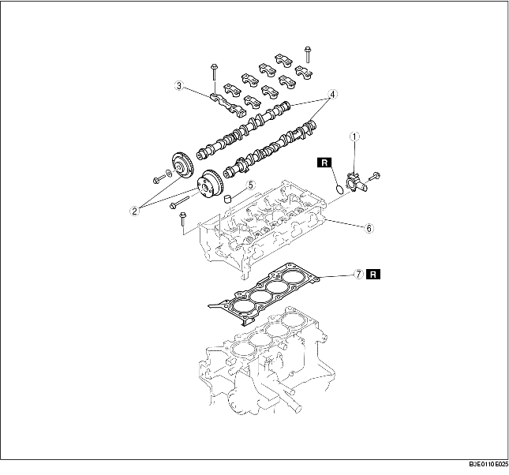

1. Démonter selon l'ordre indiqué dans le tableau.

.
|
1
|
Sortie d'eau
|
|
2
|
Pignon d'arbre à cames, actionneur de distribution variable
|
|
3
|
Chapeau d'arbre à cames
(voir la section Note sur le démontage de chapeau d'arbre à cames)
|
|
4
|
Arbre à cames
|
|
5
|
Poussoir
(voir la section Note sur le démontage de poussoir)
|
|
6
|
Culasse
(voir la section Note sur le démontage de culasse)
|
|
7
|
Joint de culasse
|
1. Maintenir l'arbre à cames à l'aide d'une clé appropriée montée sur la pièce hexagonale en fonte, comme indiqué dans l'illustration.
2. Serrer le boulon de fixation du pignon d'arbre à cames.
1. Inspecter le jeu du vilebrequin d'extrémité. (voir la section INSPECTION D'ARBRE À CAMES)
2. Desserrer les boulons de fixation de chapeau d'arbre à cames en deux ou trois étapes, selon l'ordre indiqué dans l'illustration, puis déposer les chapeaux d'arbre à cames.
1. Desserrer les boulons de fixation de chapeau d'arbre à cames en deux ou trois étapes, selon l'ordre indiqué dans l'illustration, puis les déposer.